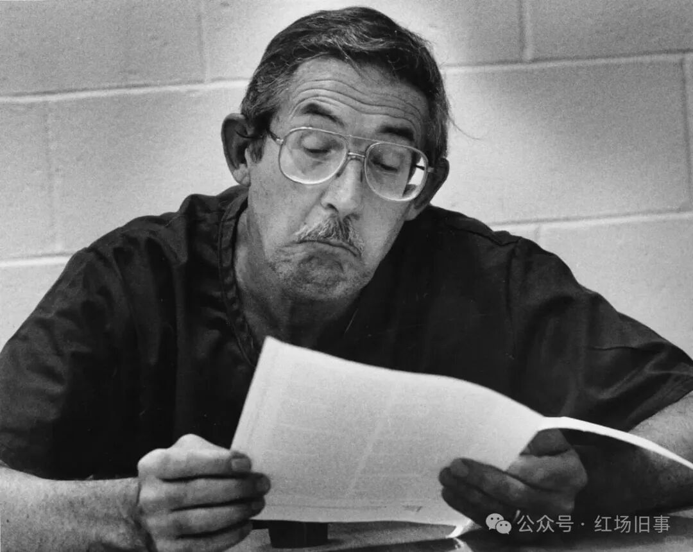

第10期 25年潜伏，出卖1500名特工，让克格勃全球情报网瘫痪，CIA的“宝石间谍”第9期 那个让苏联空军“裸奔”的工程师，死后画像挂进了CIA总部楔子：1985年华盛顿的致命选择1985年5月的一天，华盛顿。奥尔德里奇·艾姆斯走进苏联驻美大使馆。作为CIA苏联方向反情报工作的负责人，他来见“线人”是再正常不过的事。但这一次，他口袋里装着的不是任务报告，而是一份“投名状”。他递给苏联人的文件上，写着几个名字，那些都是美国安插在苏联内部的间谍。苏联人当场付给他5万美元。走出大使馆的那一刻，艾姆斯知道自己已经没有回头路了。他后来在审讯中回忆：“我当时慌了。但我知道，只有把所有人都交出去，我才能得到保护，才能拿到花不完的钱。”接下来九年，他一个人，毁掉了CIA在苏联的所有家底。
一、堕落轨迹：从特工之子到情报掮客
艾姆斯1941年出生在一个特工家庭——他父亲就是CIA雇员。高中暑假，他已经在为CIA打零工。大学辍学后，他以油漆工身份进入CIA，后来转成文员，一步步爬到苏联方向反情报负责人的位置。表面看，这是个标准的“兰利励志故事”。但艾姆斯有个致命弱点：钱。他的第一次婚姻因酗酒问题破裂，离婚分走了他大量财产。后来他又认识了哥伦比亚大学学生罗萨里奥：一个出手阔绰、喜欢奢侈生活的女人。艾姆斯的工资根本撑不起这段感情。1985年，他做出了那个改变一生的决定。他后来说，最初只想“设计一个一次性骗局，从克格勃那里换点钱”。但一旦开了口子，就收不住了。
二、接头暗号：蓝色邮筒上的粉笔印记
艾姆斯的接头方式，低调得让人害怕。他从不在公开场合与苏联人会面。每次传递情报前，他会在家门口一个蓝色邮筒上用粉笔画上记号。这是信号，可以取货了。情报被他装进软盘，藏在华盛顿郊外的树洞里。苏联人取走时，会留下报酬。有时是现金，有时是银行存款。艾姆斯从没见过他的上线，也不问对方是谁。这是克格勃的“死信箱”操作，安全等级极高。九年里，他总共拿到了250万美元的报酬。这个数字，是他年薪的几十倍。
三、致命代价：10条人命与瘫痪的情报网
艾姆斯交出的东西，值这个价吗？太值了。他供出了至少10名潜伏在苏联关键部门的美国特工。这些人被克格勃秘密处决，死因从无公开记录。还有超过30名英美间谍的身份被泄露，一度让美国在苏联的情报网络彻底瘫痪。苏联人拿到这些名单后，还干了一件事：他们把假情报塞给那些已经暴露的美国特工，让这些“活着的尸体”继续给华盛顿发消息——全是苏联人想让他们知道的东西。CIA被蒙在鼓里好几年。他们一度以为情报网的覆灭，是苏联技术升级所致。艾姆斯对自己的“成果”轻描淡写：“这一切只不过是不影响世界格局的一点花絮而已。”

四、奢侈生活：为何九年未被察觉？
艾姆斯的月薪只有几千美元，但他活得像个亿万富翁。他在郊区全款买了豪宅，开捷豹豪车，每月光是在高级定制西装上就能花光全部工资。CIA同事不是没怀疑过——他的生活方式明显超出了收入水平。但他每次的解释都一样：岳母有钱。奇怪的是，CIA内部居然信了。更离奇的是，艾姆斯还多次通过测谎仪检测。事后的调查报告说：“检测人员的态度太过友善，以至于艾姆斯说谎毫无压力。”CIA的安全审查，在他面前形同虚设。
五、抓捕迷局：两个女人的直觉
真正把艾姆斯推向绝境的，不是系统漏洞，而是两个女人的直觉。1993年，CIA反间谍部门的两位女性分析员——珍妮·维特菲尔德和桑德拉·格里姆斯——开始重新审查苏联情报网覆灭的档案。她们发现一个惊人的巧合：几乎所有泄密事件发生的时间，都与艾姆斯经手过的文件高度重合。调查人员开始监控艾姆斯。他们很快发现了他家门口那个蓝色邮筒上的粉笔印记，以及他“散步”时的反常路线。1994年2月，就在艾姆斯准备前往莫斯科开会的前夕，FBI收网了，当探员冲进他家时，他正穿着那件定制西装，准备出门。

六、终身监禁：32年后的死亡
艾姆斯被判终身监禁，不得假释，他在监狱里待了32年。就在今年，1月5日，他在马里兰州的联邦监狱去世，享年84岁。这个让CIA蒙羞三十年的男人，终于闭上了眼睛。他审讯时说的那句话，或许是对自己一生最精准的注脚：“这一切只不过是不影响世界格局的一点花絮。”

艾姆斯的案子，让CIA痛了三十年。但更痛的是反思：一个年薪几万美元的官员，在系统里活了九年才被发现。他买豪宅、开豪车、穿定制西装，同事都看在眼里，却没有一个人去查他那“有钱的岳母”。是人性贪婪毁了他，还是体制漏洞养了他？尤尔琴科的故事更离奇。这个克格勃高官1985年叛逃美国，信誓旦旦地说CIA内部没有鼹鼠。三个月后他又逃回苏联，重返克格勃任职。有人猜测，他这一趟就是来给艾姆斯打掩护的。如果这是真的，那克格勃不仅收买了艾姆斯，还派人亲自下场给他做“背景调查”。CIA输得不冤。艾姆斯的背叛，让CIA在苏联的情报网彻底瘫痪。你认为，他最致命的漏洞是什么？欢迎在评论区分享你的想法。
下期预告：罗伯特·汉森：FBI史上最致命双面间谍
他是FBI内部最沉默的男人，却在20年里把6000页绝密文件送到莫斯科。从美国核战争计划、双面间谍名单到大使馆地下的窃听隧道——全被他卖了。FBI用了300人日夜监视才抓到他。被捕时他挤眉弄眼：“你们怎么等了这么多年才找到我？”下期，走进那个让FBI至今都难以忘怀的男人。第6期 1949年苏联核爆震惊世界：谁偷走了曼哈顿计划的密码？第2期 潜伏军情六处30年，死后葬在莫斯科：那个让英国情报界蒙羞的“红色幽灵”